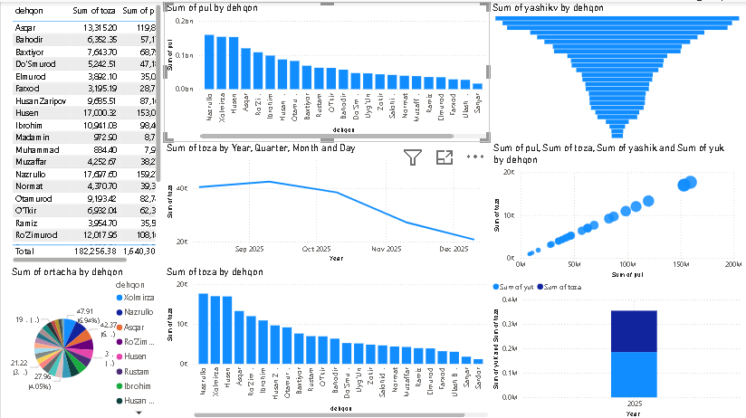

Har bir rasmni bosib ichiga kiring
Power BI & PostgreSQL Jonli Integratsiyasi
Dehqonlar Tushumi, Toza Mahsulot va Yashiklar Dinamikasi Dashboardi
Ushbu dashboard PostgreSQL relyatsion bazasiga to'g'ridan-to'g'ri ulangan holda shakllantirilgan. Baza ichiga ma'lumot tushishi yoki triggerlar orqali qayta hisoblanishi bilan barcha vizuallar avtomatik yangilanadi. Quyidagi dashboard yoki uning istalgan bo'lagini bosib, to'liq statistikani ko'rishingiz mumkin.
Haqiqiy Power BI Dashboardi (Original Hujjatdagi Holat)
image31.png
Kattalashtirish uchun bosing →

Ichiga kirish & Barcha ma'lumotlarni ko'rish
1. Dehqonlar Jadvali
182,256.38 kg • 1.64 mlrd so'm
2. Tushum Bar Chart
Nazrullo, Xolmirza, Husen...
3. Yashik Voronkasi
Sum of yashik by dehqon
4. Vaqt O'qi (Line Chart)
Year, Quarter, Month, Day
Dashboarddagi Vizuallar Tarkibi va Alohida Statistikasi
Dehqonlar Jadvali (Table)
Har bir dehqon bo'yicha toza mahsulot va umumiy pul summasi.
Jami Toza: 182,256.38 kg
Jami Pul: 1,640,307,420
Batafsil ma'lumotlar →
Sum of pul by dehqon
Dehqonlar kesimida tushum reytingi (Clustered Bar Chart).
• Nazrullo: Eng yuqori tushum
• Xolmirza: 2-o'rindagi hajm
• Husen, Asqar, Ro'zimurod...
Batafsil ma'lumotlar →
Sum of yashik by dehqon
Yashiklar (tara) hajmi bo'yicha voronka diagrammasi.
• Funnel vizuali orqali yetkazilgan yashiklar saralangan
• Logistika va idish hisoboti
Batafsil ma'lumotlar →
Sum of pul vs toza
Mahsulot toza og'irligi va pul tushumi o'rtasidagi to'g'ri korrelyatsiya.
• R² ko'rsatkichi yuqori
• Toza og'irlik oshishi bilan to'g'ri proportsional o'sish
Batafsil ma'lumotlar →